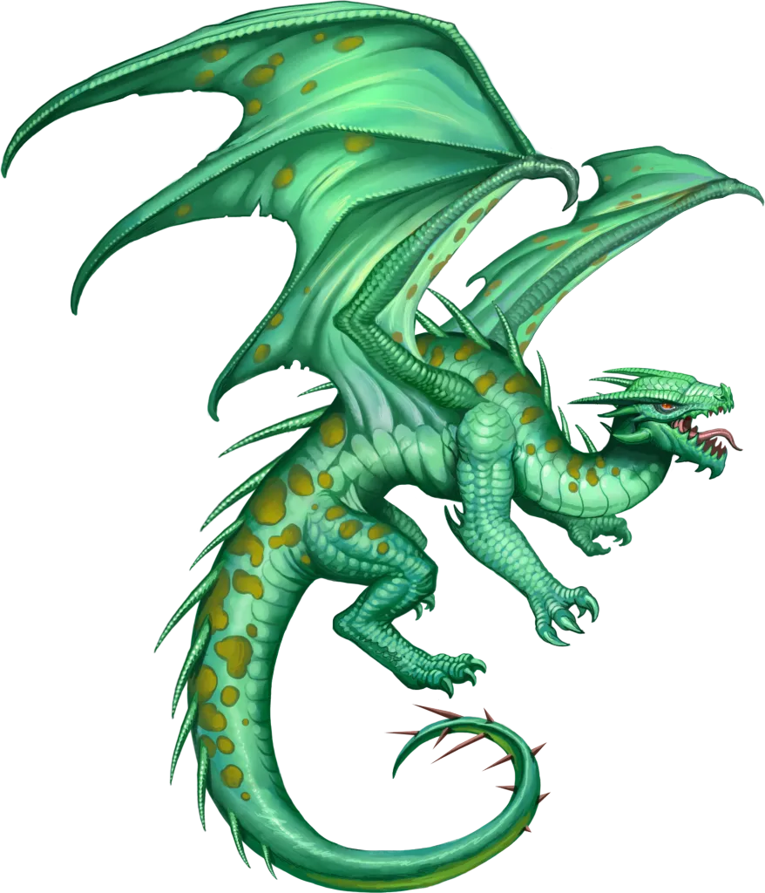
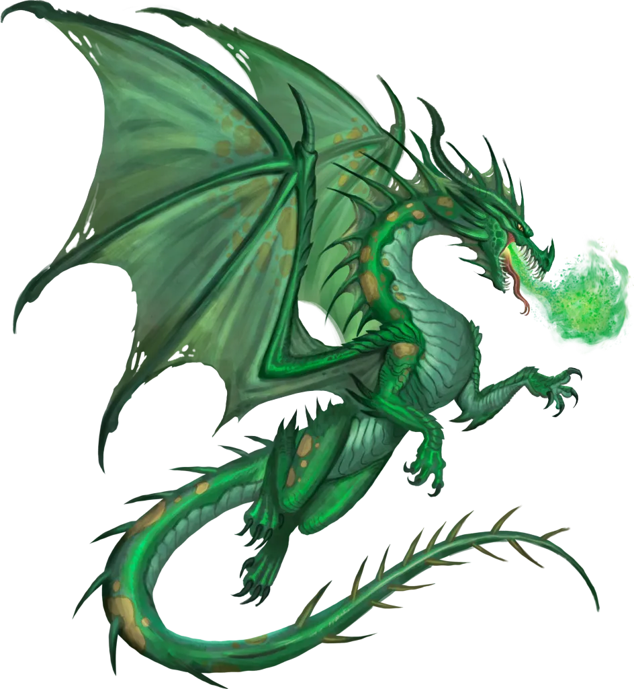

各年龄段数据卡
鲜少有哪类巨龙能像恶名昭彰的狩猎龙那样令人闻风丧胆――在许多人口中，它们干脆就是披着巨龙躯壳行走世间的连环杀手。鉴于寻常巨龙杀戮通常是出于饥饿、愤怒，或是为了彰显力量与武艺，许多巨龙传承都对打破了这一自然龙族法则的狩猎龙深感厌恶；受此影响，不少巨龙在体面的社交谈话中甚至对狩猎龙这一话题讳莫如深。狩猎龙能够感知猎物心中的恐惧，自视为大自然孕育出的顶级掠食者，肩负着吞噬万物――尤其是高等智慧生灵――的天命。真正令狩猎龙与众不同的是，它们的猎杀远远超出了自身的生存所需，简直像是受到某种无形驱策，非要借此证明自己，或是平息体内蠢蠢欲动的嗜杀冲动不可。 特里利梅努斯特伦几乎每一头狩猎龙对猎杀目标都有着各自的偏好。而特里利梅努斯特伦偏偏酷爱猎杀巨龙――更确切地说，猎杀其他狩猎龙。这位远古巨龙年深岁久，在我访谈过的青年狩猎龙口中，他简直被描绘成了某种都市传说或吓唬小辈的梦魇怪物。我在访谈期间发觉这些狩猎龙不知为何对我怕得要死，这对于如此冷酷无情的一支巨龙传承而言实属反常；在接连碰壁数次后，我总算从其中一条口中撬出了实情：关于特里利梅努斯特伦的传说宣称，倘若有人跑来向你打听他的事迹，那你多半就要成为他的下一个猎物，而那个向你发问的家伙十有八九正是伪装易容的远古狩猎龙本尊。若是回答得轻佻无礼，他便会毫不留情地扑杀而下，将你折磨数日后，再把你的头颅添进他那堆积如山的龙骨藏品里；若是回答得战战兢兢、满怀敬畏，那头远古巨龙或许只会给你留下一件毛骨悚然的“小礼物”，提醒你刚刚与死神擦肩而过――至于下一次，你可就未必有这般好运了。尽管我目前尚未遭遇任何异状，但我已向巨龙霸主瑞扎尼瓦什留下了详尽嘱托，请他妥善保管我的研究成果，并在万一我遭遇不测时替我复仇。 狩猎龙绝不会像寻常猎人追猎野兽那样干脆了事。它们必定会肆意戏弄猎物，期望激发出恰到好处的恐惧与绝望，好逼得猎物在绝境中爆发潜力、觅得奇迹般的生机并尝试逃脱。在狩猎龙看来，猎物成功脱逃只会让这场追逐变得比一面倒的屠杀有趣得多、刺激得多。等到下一次再度逼近猎物时，狩猎龙便能进一步加码――例如在周遭布满全新的陷阱，让脱身变得愈发渺茫……却又依然留有一线希望。在施法方面，大多数狩猎龙都能浑然天成地从荒野自然中汲取魔力；这也愈发坚定了它们的信念，使其深信自己生来便是物竞天择的裁决者，奉命检验每一个智慧生灵是否有资格多活一天。 狩猎开始！偶尔，几头狩猎龙会彼此下战书，约定追猎同一个目标，看谁能率先得手。这种竞逐会迫使它们走出舒适区，不再从容不迫地慢慢折磨，而是不得不加快节奏抢先进攻。出人意料的是，尽管同时被两头乃至更多狩猎龙盯上听起来显然比只面对一头要凶险得多，但猎物在这种竞猎局中的生还几率反倒更高：被迫争分夺秒的狩猎龙有时会露出太多逼近的蛛丝马迹，从而让猎物得以察觉逃脱；有时相互竞争的狩猎龙还会主动给处于领先地位的对手使绊子，反倒让猎物更容易全身而退。 狩猎龙之所以如此声名狼藉，部分原因在于它们习惯从死于爪下的猎物身上割取战利品，像佩戴荣誉勋章一般挂满自己的背棘四处炫耀。而狩猎龙自己却坚称，这种展示与凡人在屠龙之后将龙鳞制成护甲穿在身上毫无二致。目前尚无学者能够证实狩猎龙的背棘究竟是不是专门为了悬挂战利品才演化出来的。眼下最主流的学说认为，这些背棘最初或许只是格外粗大的棘刺，只因狩猎龙确实会根据彼此背上所挂战利品的数量与成色来评判高下，才在世代繁衍中顺理成章地演化得愈发硕大。 令人不寒而栗的是，狩猎龙最初或许并非源自龙神塔利尔所诞某枚龙卵的独立血脉传承，而是某种在万古岁月中形成并延续下来的文化习俗与心智执念――直到奉行此道的群龙在漫长演化中趋同合流，最终才凝结成了如今这支独树一帜的传承。无论这一假说真伪如何，狩猎龙都是极其称职的父母，会悉心向幼崽传授侦察、追踪、摸底以及为猎物布置陷阱所需的全部技艺。尽管每头狩猎龙通常都会在历练与探索中各自养成独特的猎物偏好，但受害者发觉自己正被一头青年狩猎龙尾随、而几英里外还跟着热心掠阵并随时出言指点的龙爸龙妈乃至祖辈老龙的情形，也绝非罕见。其中最年长的古龙甚至具备在众目睽睽之下隐去身形的本领，以至于偶尔会酿成这样的惨剧：仓皇逃命的猎物一头撞上看似空无一物的“坚硬空气”，结果却发现那其实是一头对晚辈表现大失所望的狩猎龙老祖母。坊间流传着一些故事，声称急智与三寸不烂之舌能帮准受害者逃过猎杀；但这类传闻极少得到证实，甚至很可能本就是狩猎龙为了迷惑潜在猎物而故意散布出去的。 追寻特里利梅努斯特伦之影尽管许多青年狩猎龙都把我错当成了它们传说中的梦魇怪物――那位易容伪装的远古狩猎龙特里利梅努斯特伦，但这倒也不完全是件坏事。虽然这令它们在某些问题上不敢对我畅所欲言，但它们也同样害怕得不敢拒绝我的采访，更没胆量袭击或猎杀我。不过，其中有一条小年轻倒是令我印象颇深：他的回答未免有些过于古怪，却又透着不相称的深刻洞见，不禁让我暗自思忖……难道那家伙才是伪装后的特里利梅努斯特伦本尊？ ――永光贤者卡利赞德雷克斯 “潜行灭绝”赫赞特里克斯最古老、最强大的狩猎龙在挑选狩猎目标时，往往不是专挑格外强横的巨物，就是钟情于极其古怪偏门的异类，有时更是二者兼而有之。尽管在龙族圈子里，那些专门潜行猎杀同族巨龙的太古狩猎龙往往最具传奇色彩、也最令群龙忌惮；但在凡人世界里，却鲜有谁的恶名能与太古狩猎龙“潜行灭绝”赫赞特里克斯相提并论。 战利品珍藏那些设法击败、智取或是潜行绕过狩猎龙并夺得其宝库的幸运儿常常会发现，占据宝库核心位置的底层藏品并非像其他大多数巨龙那样堆满金银钱币，而是一整批从历次猎杀目标身上搜集而来的战利品。这些藏品初看或许杂乱无章，但狩猎龙却能如数家珍地道出每一件战利品是在何时、何地、以何种手法猎获的；历经数年、数十年乃至数个世纪的漫长光阴，这些藏品依然为巨龙留存着无数场狩猎的美好回忆。 与几乎所有其他狩猎龙相比，赫赞特里克斯出手狩猎的次数其实少之又少，却依然闯出了这等登峰造极的凶名。究其原因，全在于其猎杀目标无一不是极具传奇色彩的存在：赫赞特里克斯只追踪并斩杀那些举世无双的孤品生灵――它们的陨落将直接导致一个物种或概念的彻底灭绝，令整个世界永远失去某样特殊而独一无二的事物，自此万古长夜再不可见。唯有亲手掐灭珍稀绝伦之物的生机，才能驱使“潜行灭绝”付诸行动；而那份灭绝时刻的滋味，则是这头强横太古龙唯独留给自己细细品尝的私享盛宴。 不消说，倘若只是某种微不足道的小虫或是濒危鸟雀濒临绝种，根本用不着劳烦一头太古狩猎龙亲自送它们走上湮灭之路。相反，赫赞特里克斯锁定的皆是体型更庞大、力量更强横的独一存在――若是无人干预，这类存在往往能存活数百年、数千年，乃至与世长存。 多谋善断的猎手出于种种不同考量，部分狩猎龙也会偏离“专挑智慧种族中的强横猎物下手”的惯常偏好，转而猎捕其他生物。举例来说，有些狩猎龙会特意搜寻某些“不够格”的猎物，只为获取特定的怪物素材――诸如利齿、骨骼、血液或毒液――用来打造特殊的独门兵器；另有一些狩猎龙则会活捉这类“不够格”的生物，将其充作诱饵，或是投进为真正心仪猎物准备的机关陷阱里（比如捉来群蛇布置毒蛇坑）。更有传言称，曾有狩猎龙屠戮了一整座小村落，只为将遇害村民唤起为亡灵，用来消耗真正目标的体力――不过最后这一条目前还只是毫无实据的坊间传闻。 相较于许多隐匿于暗影之中、孤僻追猎目标的其他狩猎龙，我们对赫赞特里克斯的动机要了解得清楚得多；因为这头太古龙对屠戮那些族群繁盛、毫无灭绝之虞的普通生灵毫无兴趣……至少在它们的鼎盛期尚未落幕之前如此。这意味着其他生灵完全有可能与赫赞特里克斯正常交谈，而不必担心这头太古龙会一言不合痛下杀手――或者至少不会把他们当成消遣猎物来追杀，除非在“潜行灭绝”看来，他们的言行实在过于放肆无礼或惹人生厌。 正因为赫赞特里克斯对杀戮绝大多数繁盛种族的成员兴味索然，甚至连凡人学者中都有人曾与它促膝交谈，得以听取“潜行灭绝”主动分享的哲学精义，外加诸如这头太古龙最钟爱的艺术流派与茗茶风味等冷门趣闻。赫赞特里克斯或许是个活了上千年的灭族屠夫，但这并不妨碍它拥有独属于自己的格调与审美趣味。 “死亡暗影”玛雅库尔丝作者：乔安・“碎月者”・塔布斯 最强大的巨龙是如何陨落的？许多巨龙死于宿敌之爪，或是倒在劫掠成性的冒险者剑下；但也有相当一部分赫赫有名的巨龙，最终倒在了太古狩猎龙“死亡暗影”玛雅库尔丝的面前。玛雅库尔丝自视为顶级掠食者之上的终极掠食者，专门猎杀龙族之中声名最盛的强者――目标越强大、名气越响亮越好。她会精挑细选自己确信有把握战胜的强横巨龙，随后展开攻心博弈，趁目标熟睡或外出时悄悄潜入其最严密安全的巢穴，把宝库里的藏品重新摆弄一番，以此向猎物宣告自己随时都能出入其腹地如入无人之境。据说在痛下杀手之前，她总会故意让猎物瞥见自己一面，既是为了散播恐惧，也是将自己的名号当作死亡拜帖留给对方。玛雅库尔丝行事缜密到了吹毛求疵的地步，针对巨龙可能用来察觉她的各种感官与魔法侦测手段，她永远提前备有万全的防范措施。尽管以太古狩猎龙的标准而言，她的体型偏小、外貌也毫不起眼，但每当她准备动手杀戮时，周身便会散发出令人胆寒的森然恶意――据说就连毫无心智的存在也能本能地感知到大限将至。她设有一间专门陈列手下亡魂的战利品室；毕竟巨龙的尸骸实在太过庞大，她身上最多只能取下每条被杀巨龙的一枚鳞片穿戴点缀。 尽管平日里人们大多只能在她潜行追猎下一个龙族目标的途中偶遇她，但她也曾对任何在狩猎之道上展现出足够天赋的巨龙摆出一副爱管闲事的老祖母做派；毕竟哪怕是巨龙也终有老死的一天――衰老是目前唯一一样她还无法猎杀的东西……至少眼下不能。她渴望栽培出一位技艺精湛、狡诈多端又老谋深算的龙族传人，哪怕对方并非狩猎龙也无妨。当然，拜她为师绝对有害身心健康，因为她所谓的“训练课目”，全都是按照她自己那套冷酷标准量身定制的魔鬼试炼。 从本质上说，赫赞特里克斯深信：借由毁灭强横而独一无二的生灵、断绝它们的血脉传承，自己正在践行着与伟大龙神塔利尔相似的使命――在远古的泰坦神战中，塔利尔正是征伐并吞噬了名为“先古者”的古老神兽，才孕育出了如今绝大多数现代巨龙传承。那些先古者大多是举世无双的独立个体，不过神话中也暗示其中少数神兽拥有寥寥数名同族。无论如何，塔利尔当年确确实实将几乎所有先古者猎杀至彻底灭绝，这也正是时至今日凡间已极少还有神兽存世的缘由。 何谓上佳战利品不同狩猎龙对收集何种战利品各有偏好，但总体而言，经久不坏的器物总归比容易腐烂变质的残肢断体更适合充作战利品。即便如此，世上依然存在着偏爱血肉残骸的狩猎龙；它们要么依靠魔法，要么凭借世俗的标本剥制与防腐技艺，又或是双管齐下，悉心保养着自己那些令人毛骨悚然的藏品。 赫赞特里克斯相信，倘若自己能在足够多的现代强横物种身上重现这一壮举，像当年那位伟大龙神一样将它们族群中的最后幸存者吞噬殆尽，自己或许便能获赐堪比塔利尔当年的神迹――诞下一窝龙卵，孵化出一支此前从未行走于这片大地之上的全新巨龙传承。 倘若这般狂想当真存在一丝实现的可能，那么赫赞特里克斯无疑是最接近目标的那一位；为此，它正格外留心搜寻着任何尚存世间的先古者，以求将其猎杀吞噬。当然，这头太古狩猎龙固然强横无匹，但先古者的伟力犹在其上；因此，想要复现塔利尔当年凭压倒性神力达成的伟业，赫赞特里克斯势必得施展出登峰造极的狡诈权谋才行。 最危险的猎局鉴于狩猎龙构成的巨大威胁，每当这些冷酷残忍的恶龙显露踪迹时，许多地区与文明都会公开发布针对它们的悬赏令。对此，不同狩猎龙的反应各异：有些将悬赏视作值得骄傲的资本，认为赏金正是世人畏惧自己的明证――这类狩猎龙往往会故意犯下累累恶行以推高赏金，并把“谁头上的悬赏金额最高”当成同族之间互相攀比的竞赛；另一些则会勃然大怒，直接将当地最高统治者列为报复猎杀的目标；还有少数狡猾的狩猎龙甚至会反过来利用悬赏令引诱自己最钟爱的猎物上门――也就是那些受雇前来讨伐它们的赏金猎人。不过除却上述特例，绝大多数狩猎龙还是更倾向于保持低调。尽管一纸悬赏未必真能威胁到巨龙的性命，却难免像围着巨兽嗡嗡乱转的苍蝇一样惹人心烦，分散它们追逐核心猎物的精力。 |
 狩猎龙  狩猎龙 |